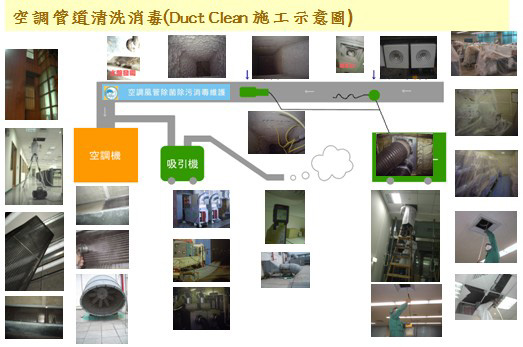

空調風管消毒清潔
室內空氣要保持清淨，必須有賴於空氣調節系統(air-handling system)，來將室內的污染排除或過濾，此清淨度除了與濾網的效率及每小時換氣的次數有關，更重要的是在於空調系統之清潔及消毒維護，它除了確保室內空氣品質外，更可將濾網上的灰塵去除達到風壓之流順，可大幅之改善因亂流或阻斷氣流所造成之耗能，除此外還可防止火災引起煙囪效應，導致內部纖維竄燒。
通風管路內容
改善室內空氣品質
| Name | Description | Purify |
|---|---|---|
| 1. 粉(灰)塵 | 含管道中存留的大量粉(灰)塵，除造成上呼吸道不適外，更有可能成為細菌、病毒、的載體，因此在施工時，主要是以出、回、通風口拆卸消毒清洗，並深入硬管之風管中清潔，抽取過濾集塵軟管則直接換裝為主。 | Y |
| 2. TVOC(總有機揮發物) | 室內之有害氣體主要以EDCs(內分泌干擾素)危害佔多數，它會干擾我們體內。 | Y |
| 3. 微生物 | 管道中及天花板內之微生物消毒及抗菌處理。 | Y |
Image

| Description |
|---|
| 1情報收集、風管線路圖出風口數量鼓風機熱交換機數 |
| 2作前拍照管內塵量，做為驗收比對 |
| 3施工企劃、作業時間人數安全檢討機具用電耗材 |
| 4 資器材搬入，裝置 |
| 5 清掃消毒前效果測定(運轉) |
| 6. 養生(室內器具) |
| 7 天花板(風管)開口 |
| 8 清掃消毒前粉塵微生物測定(運轉關) |
| 9 管路開口 |
| 10 清掃機設置 |
| 11管路清掃-器具-鼓風機等洗淨、消毒 |
| 12裂-開口部版金修補 |
| 13送風機運轉 |
| 14粉塵飛散確認 |
| 15送風機停止(測定) |
| 16開口部份修補 |
| 17蟲、鼠害防止 |
| 18天花板清理(消毒)並回復 |
| 19機具撤離保護撤離室內清掃 |
| 20送風機運轉 |
| 21最終確認 |